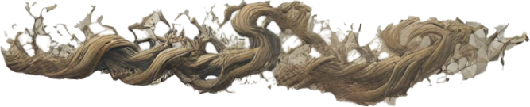

Character Creation


Racial Bonuses/Disadvantages
The following table lists the playable races and their racial bonuses and penalties. Hover over an entry for more informaiton.
| Race | Combat Bonus | Passive Bonus | Combat Penalty | Passive Penalty | Racial Ability |
|---|---|---|---|---|---|
| Human | None | 10% discount from allied faction merchants | None | Kill-on-Sight (KOS) to all factions except their own | Active Ability - Ingenuitive!: Activate this ability to perform any gathering action once per hour, even if the required tool is not held; gain +1 to success roll if the required tool is in player's possession |
| Elf | Agility +5 Intelligence +5 |
The cost to use ablities and cast spells is reduced by 5% | Strength -5 Stamina -5 |
Charisma -5 to all races except elves Cost to purchase from non-elf merchants +10% |
Active Ability - Glean: Judge target's emotional state, gaining +2 to next interaction roll; 24 hour cooldown |
| Orc | Strength +5 Stamina +5 |
Weight capacity before becoming encumbered increased by 20% | Intelligence -5 Wisdom -5 |
Charisma -10 Unable to trade with non-Orc merchants |
Active Ability - Snarl: Cause all targets in a 5m radius to run in fear for 3 seconds; 5 minute cooldown |
Class Starting Stats
The table below lists each class and their initial stats. Hover over an entry for more information.
| Class | Strength (STR) | Stamina (STA) | Dexterity (DEX) | Agility (AGI) | Intelligence (INT) | Wisdom (WIS) | Charisma (CHA) |
|---|---|---|---|---|---|---|---|
| Warrior | 20 | 20 | 15 | 10 | 5 | 5 | 5 |
| Rogue | 10 | 10 | 20 | 20 | 5 | 5 | 5 |
| Mage | 5 | 5 | 5 | 5 | 20 | 20 | 10 |
| Druid | 5 | 5 | 5 | 5 | 10 | 20 | 20 |
| Necromancer | 5 | 20 | 5 | 5 | 20 | 10 | 5 |
Class/Race Selection
Warrior
Warrior


Mage
Mage


Rogue
Rogue


Necromancer
Necromancer
Human
, and others cause the diseases and mock life with reanimation and mutation. Humans are not just spiritual. Faith is a defining characteristic for them. Human necromancers are also their priests and doctors, and in some cases, a sort of biomage on the battlefield. Of average intelligence, human necromancers can fulfill a variety of roles and rely on their wisdom and stamina to perform their roles well.")
, and others cause the diseases and mock life with reanimation and mutation. Humans are not just spiritual. Faith is a defining characteristic for them. Human necromancers are also their priests and doctors, and in some cases, a sort of biomage on the battlefield. Of average intelligence, human necromancers can fulfill a variety of roles and rely on their wisdom and stamina to perform their roles well.")
Male
Female
Elf
, and others cause the diseases and mock life with reanimation and mutation. Elves are highly intelligent and make excellent necromancers, but they are not a spiritual people at all, believing it to be nonsense for the less intelligent races. So their focus tends to be towards disease, toxins, and volatile chemicals. Their magic resembles biological and chemical warfare.")
, and others cause the diseases and mock life with reanimation and mutation. Elves are highly intelligent and make excellent necromancers, but they are not a spiritual people at all, believing it to be nonsense for the less intelligent races. So their focus tends to be towards disease, toxins, and volatile chemicals. Their magic resembles biological and chemical warfare.")
Male
Female
Orc
, and others cause the diseases and mock life with reanimation and mutation. Orc necromancers are not intelligent but highly spiritual. Their necromancers are more like shaman, calling on the spirits of the dead to harm and debuff their enemies. They perform more of a support role for orc warriors, but they do it very well.")
, and others cause the diseases and mock life with reanimation and mutation. Orc necromancers are not intelligent but highly spiritual. Their necromancers are more like shaman, calling on the spirits of the dead to harm and debuff their enemies. They perform more of a support role for orc warriors, but they do it very well.")
Male
Female
Druid
Druid
Human


Male
Female
Elf


Male
Female
Orc
![Male Orc Druid](../images/character-portraits/druid-orc-m.webp "Druids worship the gods and spirits of the natural world. They believe that all life is connected through a single source, and can draw energy from that source to control nature and the elements, as well as communicate with animals. Orc druids are very rare. Orcs are not a natural species, instead being unstable and degrading genetic hybrids between humans, elves, and demons. As a result, they are considered abominations by the natural world. An orc druid is an orc which the nature gods are playing with, mocking them and causing them constant pain. The best way to describe an orc druid would be that it's something like a 'drunken master battlemage'combatant who cannot control the flow of magic through them and whose spells are unstable, backfiring and causing constant harm to themselves in addition to their targets. The nature gods gave them high stamina and damage resistance to make sure orc druids would endure constant damage, but that this harm would rarely kill them.")
![Female Orc Druid](../images/character-portraits/druid-orc-f.webp "Druids worship the gods and spirits of the natural world. They believe that all life is connected through a single source, and can draw energy from that source to control nature and the elements, as well as communicate with animals. Orc druids are very rare. Orcs are not a natural species, instead being unstable and degrading genetic hybrids between humans, elves, and demons. As a result, they are considered abominations by the natural world. An orc druid is an orc which the nature gods are playing with, mocking them and causing them constant pain. The best way to describe an orc druid would be that it's something like a 'drunken master battlemage'combatant who cannot control the flow of magic through them and whose spells are unstable, backfiring and causing constant harm to themselves in addition to their targets. The nature gods gave them high stamina and damage resistance to make sure orc druids would endure constant damage, but that this harm would rarely kill them.")